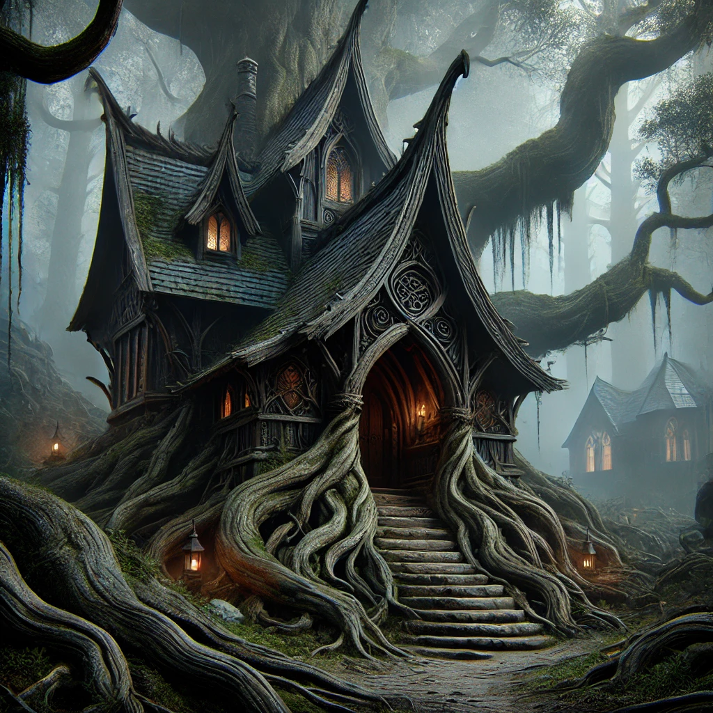
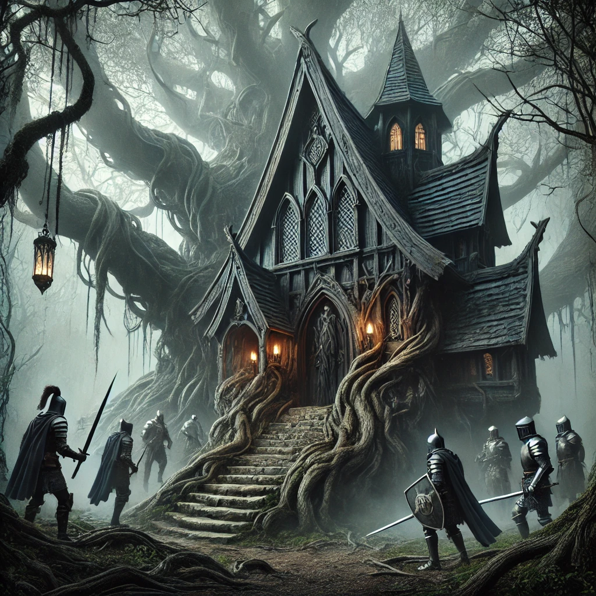
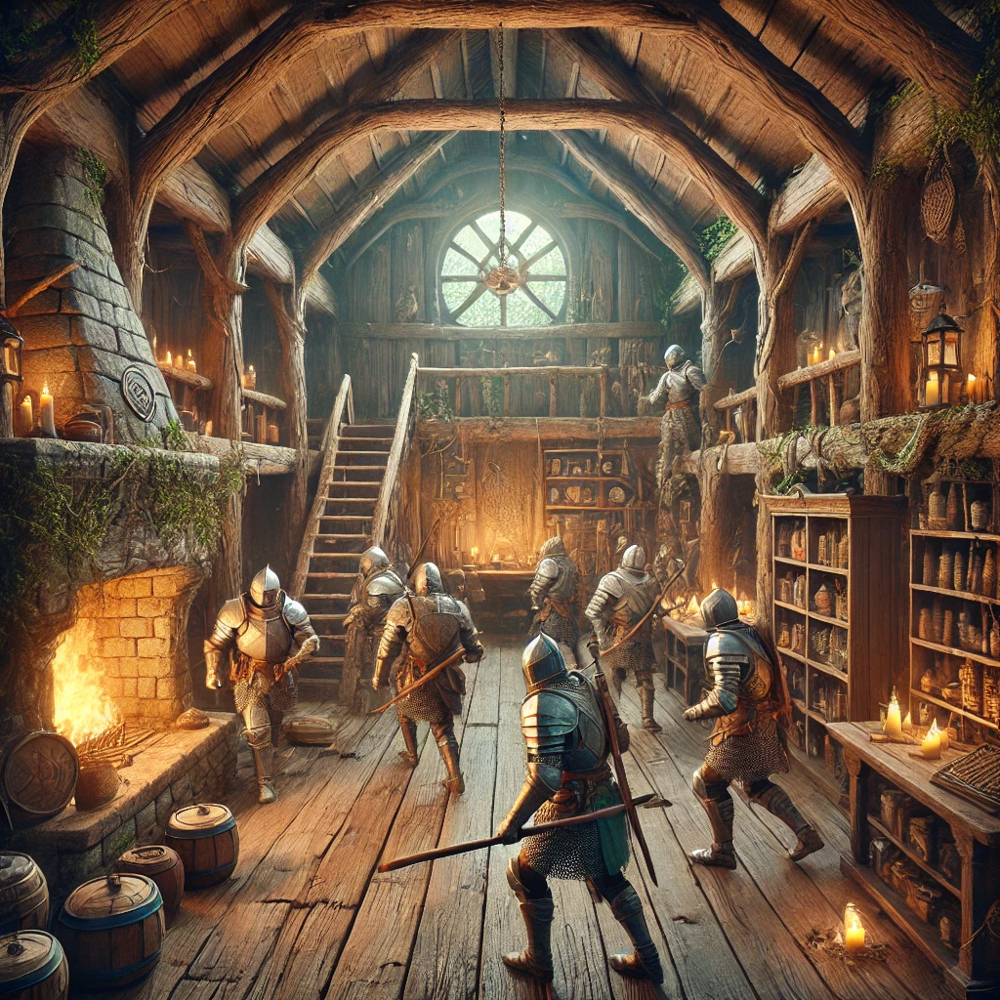
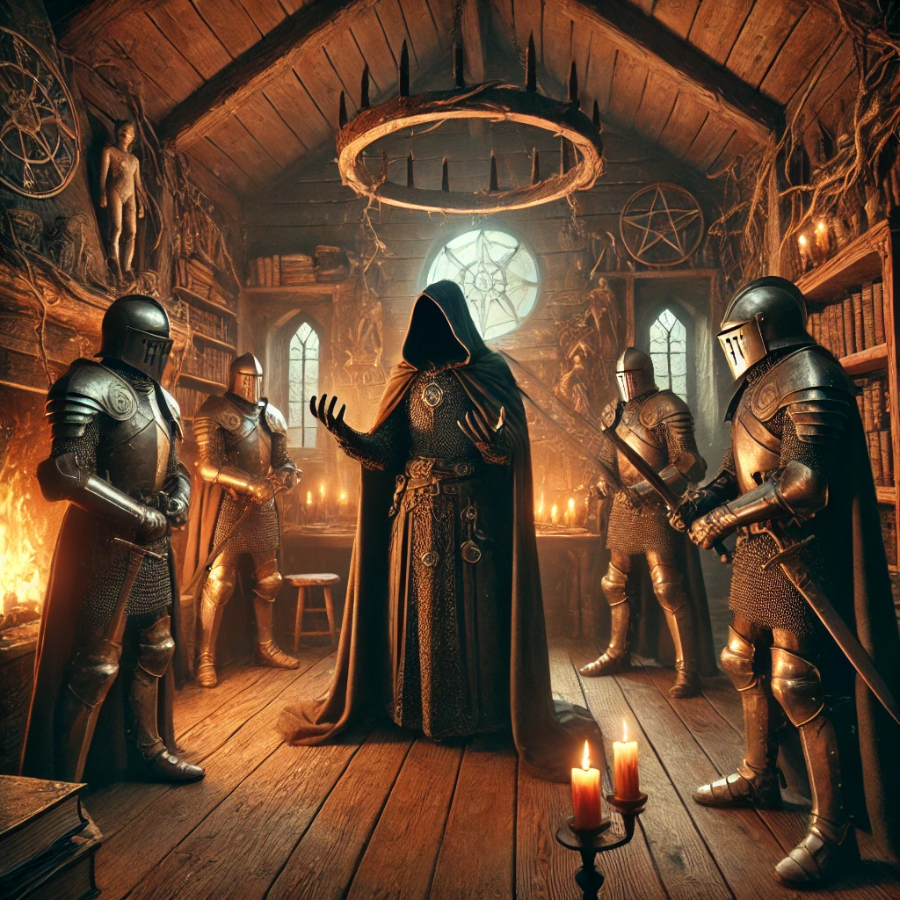
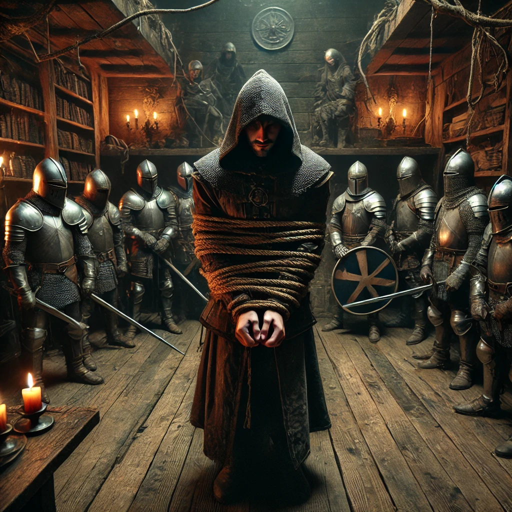
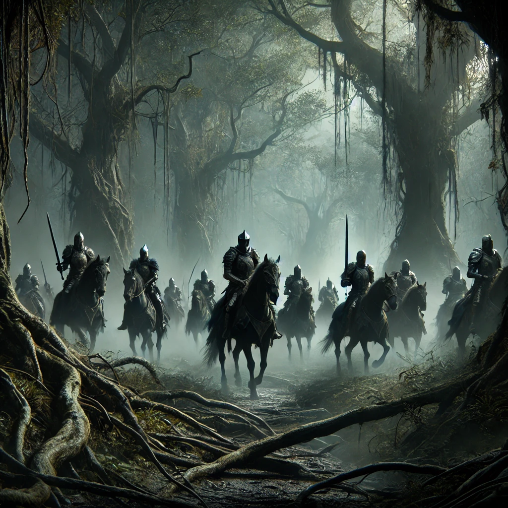
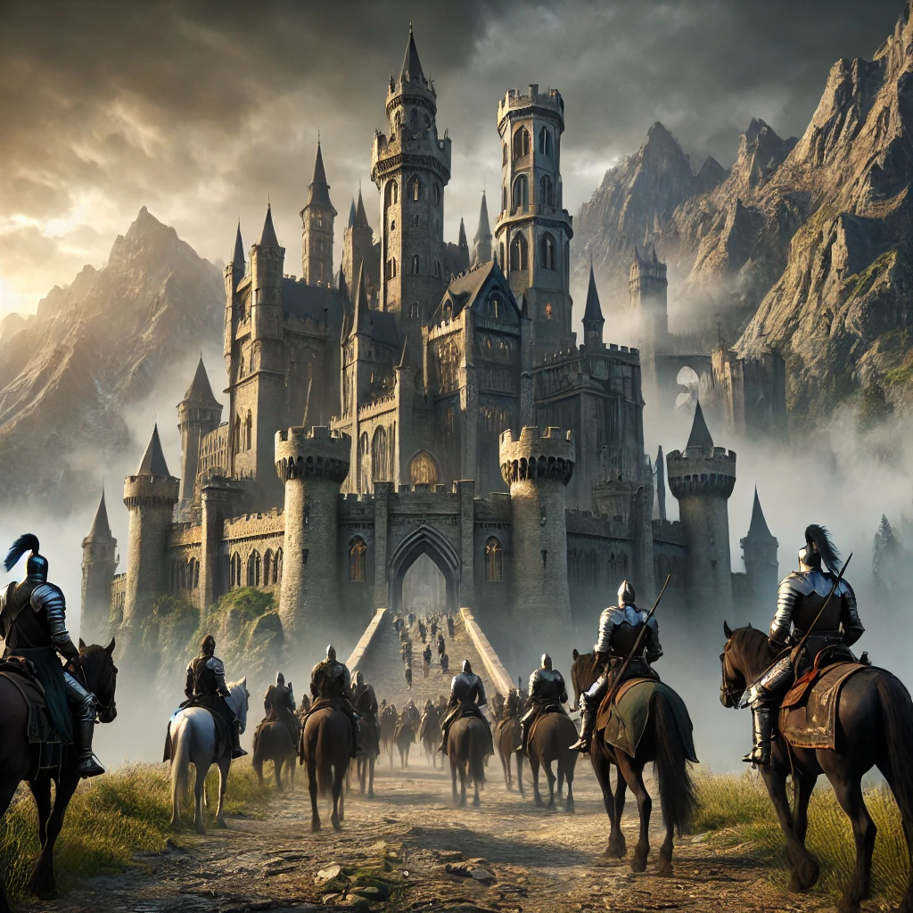
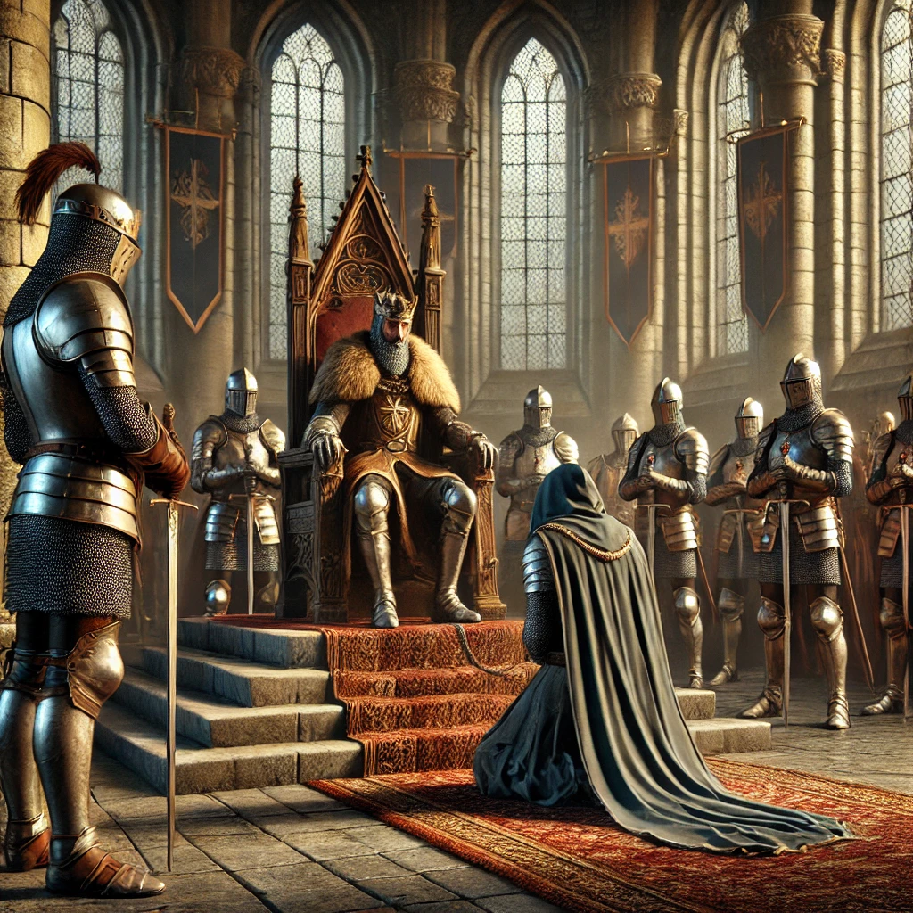

Ubicacion: 2ºB
En un rincón remoto de un bosque oscuro, una antigua cabaña de madera se erguía, casi oculta entre la espesura. Solo aquellos que sabían dónde buscarla podían encontrarla, y aquellos que la hallaban rara vez regresaban para contar la historia.
En una noche sin luna, un grupo de caballeros emergió de entre las sombras, sus armaduras reflejando la tenue luz de sus antorchas. Habían viajado desde muy lejos, guiados solo por rumores y antiguos mapas que marcaban el bosque como su destino.
El grupo se detuvo frente a la cabaña, silenciosos, como si temieran que el mismo bosque escuchara su llegada. Con un movimiento firme, el caballero líder empujó la puerta, y los demás entraron en formación, la madera crujiendo bajo sus botas.
La cabaña era sombría, impregnada de un aroma a hierbas secas y misterios antiguos. En el centro, rodeado de frascos, pergaminos y amuletos, estaba el mago que buscaban. Un hombre con el rostro marcado por los años y una mirada de profundo conocimiento, quien, a pesar de la sorpresa, no mostró miedo. Solo se mantuvo en pie, observando a los caballeros con un desafío silencioso.
Sin una palabra, los caballeros lo rodearon, sus espadas desnudas reluciendo bajo la escasa luz. El mago alzó una mano, comenzando a murmurar un antiguo hechizo, pero fue rápidamente interrumpido; las manos de los caballeros lo sujetaron con fuerza, amarrándolo con gruesas cuerdas y asegurándose de que no tuviera oportunidad de lanzar más encantamientos.
Con su objetivo capturado, el grupo abandonó la cabaña y se adentró de nuevo en el bosque. Avanzaron durante horas, deslizándose entre los árboles con el prisionero a cuestas. La atmósfera estaba cargada de tensión; sabían que su misión no era bien vista por todos en el reino, y que muchos consideraban al mago no solo un enemigo, sino también un protector de antiguos secretos.
Finalmente, los caballeros emergieron del bosque, el imponente castillo real elevándose frente a ellos. Cruzaron los puentes y los patios hasta llegar a la sala del trono. Allí, en el centro de la cámara, el rey esperaba, con una expresión grave y calculadora.
El mago fue arrojado al suelo frente a él, sus ataduras reforzadas. Los caballeros se retiraron a los lados, dejando al prisionero a merced de la mirada fría y poderosa del rey. Con voz profunda, el rey proclamó la condena.
El mago, a pesar de la situación, mantuvo su mirada firme, sin arrepentimiento. Sabía que había protegido secretos que podían cambiar el destino del reino, secretos que ahora se perderían en la oscuridad de las mazmorras. Y así, el destino estaba sellado. Encerrado en una celda medieval, el mago debía hallar la manera de liberarse y recuperar aquello que le habían arrebatado.
Como jugador, ahora tú eres el mago. La misión es clara: escapar. El tiempo es tu enemigo, y la oscuridad del castillo, tu única aliada.